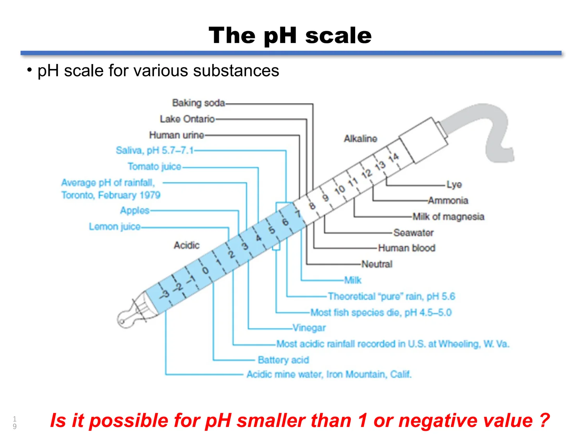
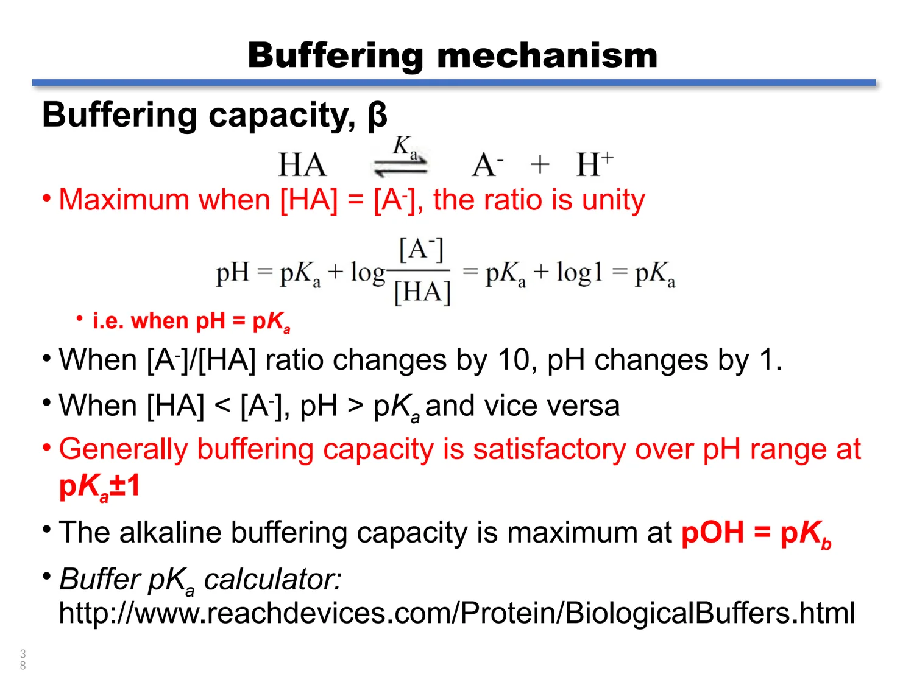
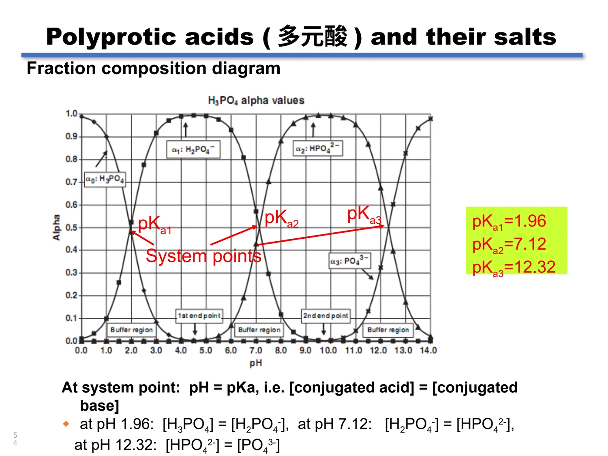

03 · ACID-BASE EQUILIBRIA
酸碱平衡
从酸碱定义的演化到水的质子自递、解离常数、缓冲容量和多元酸的分布分数——这一章为后面所有滴定计算准备工具箱。
3.1 OVERVIEW OF TITRATION
从滴定到酸碱体系
滴定 Titration（也称 titrimetry、volumetric analysis）是向含被滴定物 titrand 的溶液中加入已知浓度的滴定剂 titrant，让两者按确定计量关系反应，再由所消耗的体积确定被滴定物浓度的方法。因为体积测量在其中起决定作用，滴定分析也常被称为容量分析。
Titrant 滴定剂 由滴定管加入的那一份溶液，通常配成标准溶液，浓度已知。酸碱滴定中滴定剂几乎总是强酸或强碱。
Titrand 被滴定物 装在锥形瓶里、浓度待测的那一份溶液，可以是强酸（强碱），也可以是弱酸（弱碱）。
按反应类型可以把滴定分为四类，后面几章会依次展开。这也是本课程从第二章转入溶液平衡的分界点：容量器皿解决“量得准”，溶液平衡解决“算得准”。

| 类型 | 反应基础 | 典型滴定剂 | 本章之后的位置 |
|---|---|---|---|
| 酸碱滴定 Acid-base titration | 质子转移 | NaOH、HCl 等强碱或强酸 | 本章与第 4 章 |
| 络合滴定 Complexometric titration | 金属–配体配位 | EDTA（Y⁴⁻） | 络合滴定章 |
| 氧化还原滴定 Redox titration | 电子转移 | KMnO₄、I₃⁻、S₂O₃²⁻ | 氧化还原滴定章 |
| 沉淀滴定 Precipitation titration | 生成沉淀 | AgNO₃、NH₄SCN | 沉淀滴定与重量分析章 |
来源：Acid-Base Equilibria slides 2–3；Acid-Base Titration slides 2–3；教材 Chapter 9 概述。
3.2 ACID-BASE THEORIES
酸碱理论的四次扩展
“什么是酸”这个问题在化学史上被反复重新定义。每一次扩展都不是推翻前一版，而是把适用范围扩大：从只承认水溶液，到承认非水溶剂，再到只关心质子，最后连质子也不需要。
| 理论 | 酸的定义 | 碱的定义 | 溶剂限制 | 典型例证 |
|---|---|---|---|---|
| Arrhenius 电离理论 | 在水中电离给出 H⁺（或与水结合给出 H₃O⁺） | 在水中电离给出 OH⁻ | 只能用于水 | HA ⇌ H⁺ + A⁻；M(OH)ₙ → Mⁿ⁺ + nOH⁻ |
| Franklin 溶剂体系理论 | 给出溶剂阳离子的溶质 | 给出溶剂阴离子的溶质 | 可推广到可电离的非水溶剂 | 液氨中 NH₄Cl 为强酸、NaNH₂ 为强碱；2NH₃ ⇌ NH₄⁺ + NH₂⁻ |
| Brønsted–Lowry 质子理论 | 任何能给出质子的物质（质子给体） | 任何能接受质子的物质（质子受体） | 不要求溶剂可电离 | HA + B ⇌ BH⁺ + A⁻；苯、二氧六环中同样成立 |
| Lewis 电子理论 | 接受电子对的物质（电子对受体） | 给出电子对的物质（电子对给体），常含 O 或 N | 与质子无关 | BF₃ + :NH₃ → F₃B←NH₃，形成配位共价键 |
共轭酸碱对：本章的统一语言
在 Brønsted 理论里，一个半反应写作 AH ⇌ H⁺ + A⁻，右边的 A⁻ 就是 AH 的共轭碱 Conjugate base，左边的 AH 是 A⁻ 的共轭酸 Conjugate acid；两者相差一个质子，合称共轭酸碱对 Conjugate pair。溶液里不存在游离质子，质子给体必须先遇到质子受体才肯放手，所以真正的反应式永远写成双分子形式：
AH：酸；B：碱；BH+：B 的共轭酸；A−：AH 的共轭碱。教材与课件常在写法上把水写成 H₂O 或省略，但受体必须存在。
按这一理论，属于酸的有 HCl、HAc、NH₄⁺、[Al(H₂O)₆]³⁺、H₂PO₄⁻、HPO₄²⁻ 等；属于碱的有 NH₃、[Al(H₂O)₅OH]²⁺、Cl⁻、Ac⁻、HPO₄²⁻、PO₄³⁻ 等。注意 H₂PO₄⁻、HPO₄²⁻ 在两张名单里都出现了——它们既是酸又是碱，这类物质称为两性物质 Amphiprotic species，第 3.8 节会专门处理。
酸越强，共轭碱越弱
容易放出质子的物质是强酸；它放出质子后剩下的形态与质子结合能力弱，因而是弱碱。反之碱越强，它的共轭酸越弱。这条“此消彼长”的关系在比较 Ka 与 Kb 时反复使用。
酸碱强度是相对的
酸碱在溶液中表现出的强度不仅与本性有关，也与溶剂有关。我们测到的只是它在一定溶剂中的相对强度：HAc 在水中是弱酸，在液氨中却是强酸，因为液氨夺质子的能力远强于水。
来源：Acid-Base Equilibria slides 4–9；课堂笔记“酸碱理论”段；教材 §9.1–9.2。
3.3 AUTOPROTOLYSIS OF WATER
水的质子自递与 Kw
质子自递反应 Autoprotolysis 指溶剂自身给出特征阳离子和阴离子的自电离过程。水的自递反应是整个酸碱体系的基准点：
严格的热力学自递常数用活度表示；由于稀溶液中水的活度近似为 1，习惯上写成摩尔浓度形式：
a 表示相应物种的活度。在稀溶液中以浓度代替活度是常用近似，也是后面全部计算的隐含前提；当离子强度明显升高时必须回到活度。
纯水中除去水的自电离以外没有别的 H⁺ 或 OH⁻ 来源，因此 [H⁺] = [OH⁻] = √Kw = 1.0 × 10−7 mol·L⁻¹（25 °C）。
Kw 是温度的函数。25 °C 时为 1.008 × 10−14，30 °C 时约 1.468 × 10−14，50 °C 时约 5.74 × 10−14；0 °C 时只有 0.113 × 10−14。温度升高使自电离增强，这直接改变了“中性”对应的 pH 值。
来源：Acid-Base Equilibria slides 10–11；课件中水的离子积随温度变化表。
3.4 THE pH SCALE
pH、pOH 与 pKw
把跨越十几个数量级的浓度压到对数刻度上，是 Sørensen 引入 pH 的初衷。约定 pX = −log X，于是：
把 Kw 的表达式取负对数即可得到第三式：−log Kw = −log[H⁺] − log[OH⁻]，即 pKw = pH + pOH。25 °C 时 pKw = 14.00，因此 pH + pOH = 14.00。
中性不等于 pH 7
“中性”的定义是 [H⁺] = [OH⁻]，而不是 pH = 7。在 37 °C 的血液温度下，Kw = 2.5 × 10−14，pKw = 13.60，中性溶液的 pH = pOH = 13.60/2 = 6.80，对应的氢离子浓度为：
血液的正常 pH 范围是 7.35–7.45。既然 37 °C 下中性点是 6.80，那么 pH 7.40 比在中性点高 0.60 个 pH 单位——也就是说血液在体温下比按 25 °C 判断时“更偏碱”。临床上 ±0.3 个 pH 单位已属极端变化，所以这个温度修正是不可忽略的。
25 °C：pH 7 是中点
pKw = 14.00，中性 pH = 7.00。日常计算默认此温度，除非题目另行说明。
37 °C：中点移到 6.80
pKw = 13.60。判断“酸、碱、中性”必须用当时温度下的 pKw/2 作参照，否则生理 pH 会被系统性误读。
极稀溶液：水也是质子来源
当酸或碱的浓度远小于 10−7 mol·L⁻¹ 时，水自递贡献的 H⁺ 不能再被忽略。例如 1.0 × 10−7 mol·L⁻¹ 的 HCl 溶液，pH 并非 7.00 而是约 6.79：设水电离贡献 x，则 (10−7 + x)x = Kw，解得 [H⁺] ≈ 1.62 × 10−7。
若来自酸碱的 [H⁺] 或 [OH⁻] 达到 10−6 mol·L⁻¹ 或更高，水的自电离贡献就可以忽略；低于这个量级则必须联立水的平衡计算。
这个算例其实比实际更“学院派”：空气中的 CO₂ 溶入水后形成约 1.2 × 10−5 mol·L⁻¹ 的碳酸，远超过 10−7 这一水平（纯水暴露于空气后 pH 约为 5.6）。要做成真正的 10−7 mol·L⁻¹ 酸溶液，必须严格排除并持续隔绝 CO₂。
pH 可以为负
负 pH 不常见但确实存在。10 mol·L⁻¹ 的 HCl 若完全电离，pH = −log 10 = −1。常见浓试剂的近似浓度是：冰醋酸 17 mol·L⁻¹、氨水（29%）15 mol·L⁻¹、盐酸（37%）12 mol·L⁻¹、硝酸（70%）16 mol·L⁻¹、磷酸（85%）15 mol·L⁻¹、高氯酸（71%）11 mol·L⁻¹、硫酸（96%）18 mol·L⁻¹。这些数值也提醒我们：浓溶液中“完全电离”和“以浓度代替活度”两个假设都已经失效。
强碱与稀释的两次练习
① 5.0 × 10−2 mol·L⁻¹ NaOH（25 °C）：[OH⁻] = 5.0 × 10−2，pOH = 1.30，pH = 14.00 − 1.30 = 12.70。注意结果保留两位有效数字，因为 5.0 只有两位。
② 已知 pH = 9.67，求 [H⁺]：[H⁺] = 10−9.67 = 2.1 × 10−10 mol·L⁻¹。
来源：Acid-Base Equilibria slides 12–20；教材 §9.6、生理 pH 章节。
3.5 STRENGTH & EQUILIBRIUM CONSTANTS
强酸强碱与弱酸弱碱：Ka 与 Kb
强酸、强碱在水溶液中完全电离，用单向箭头书写：HCl(aq) → H⁺(aq) + Cl⁻(aq)，KOH(aq) → K⁺(aq) + OH⁻(aq)。弱酸、弱碱只部分电离，必须用平衡箭头和平衡常数描述。
酸解离常数 Ka 是酸强度的定量量度：Ka 越大，分子在溶液中解离得越多，酸性越强。但 Ka 与 pH 不是一回事——Ka 描述“这个酸本身有多愿意交出质子”，pH 描述“这杯溶液现在有多酸”。少量强酸就能给出很低的 pH（如 2），同浓度的弱酸则给不出——例如 1.00 × 10−3 mol·L⁻¹ 醋酸只到 pH 3.87 左右。
氨：Kb 的经典例子
氨的碱性常数 Kb = 1.75 × 10−5（25 °C）。它与醋酸的 Ka 数值巧合地相等，但两者是完全独立的量，不要因为数值相同就认为有对应关系。
Ka 与 Kb 的换算：KaKb = Kw
以醋酸为例，把两个反应相加：
两式中的 HOAc 与 OAc⁻ 互相抵消，剩余部分恰好是水的自递反应，因此两个常数之积为 Kw；虚线框内是 Kw = [H⁺][OH⁻]，框外余下的就是 1/Ka：
只要查到共轭酸碱对中任意一侧的常数，就能算出另一侧：Kb = Kw/Ka。醋酸 Ka = 1.75 × 10−5，所以 Ac⁻ 的 Kb = 1.00 × 10−14/1.75 × 10−5 = 5.71 × 10−10。这正是弱酸强碱滴定时计量点显碱性的原因。
一元弱酸的完整算法
以 1.00 × 10−3 mol·L⁻¹ 醋酸为例，设解离量为 x：
解得 x = 1.34 × 10−4 mol·L⁻¹，即 [H⁺] = [OAc⁻] = 1.34 × 10−4，pH = 3.87。若改用近似式 [H⁺] = √(Ka·C) = 1.32 × 10−4，pH = 3.88，误差不到 0.01 个 pH 单位。
只有当解离度小于约 10%–15% 时，才可以用 C 代替 C − x。一条更实用的判据是 C > 100 Ka（或说 C/Ka > 10²，此时近似误差在 1% 量级）。本算例中 C/Ka ≈ 57，严格来说不满足 100 倍条件，但实际误差仍可接受；第 3.7 节磷酸的第一个质子就明确不满足，必须解二次方程。
来源：Acid-Base Equilibria slides 21–27；教材 §9.3–9.5。
3.6 BUFFERING MECHANISM
缓冲溶液、Henderson–Hasselbalch 方程与缓冲容量
缓冲溶液 Buffer 是在加入少量酸、少量碱或进行稀释时都能抵抗 pH 变化的溶液。它通常由弱酸与其共轭碱，或弱碱与其共轭酸按预定浓度或比例组成。
缓冲作用从哪里来
在醋酸缓冲体系中，额外加入的醋酸钠提供了一大批 OAc⁻，此时 [H⁺] 不再等于 [OAc⁻]，而是由
决定。这就是同离子效应 Common ion effect：共轭碱的存在把弱酸的解离压了回去，使溶液里同时保有可观的 HA 与 A⁻ 储备。加入强酸时，H⁺ 与等量的 A⁻ 结合成 HA；加入强碱时，OH⁻ 与等量的 HA 反应生成 A⁻。比值 [A⁻]/[HA] 变化很小，因此 pH 变化很小。稀释时分子分母同比减小，比值不变，pH 也几乎不变。
Henderson–Hasselbalch 方程
对弱碱–共轭酸体系，同一套逻辑写成：
课件同时指出一元酸其实有两类：中性酸 HA（如 HOAc）和阳离子酸 HA⁺（如 NH₄⁺）。后者的解离式是 NH₄⁺ ⇌ NH₃ + H⁺，直接代入同一方程即可，不必另立公式。
[A⁻]、[HA] 用平衡浓度；由于同离子效应使解离量很小，通常直接用配制的分析浓度代入。如果解离度不可忽略（酸很弱、浓度很低、或缓冲比极端），必须回到平衡式重算。
两组缓冲计算
① 配制型：10 mL 0.10 mol·L⁻¹ HOAc 与 20 mL 0.10 mol·L⁻¹ NaOAc 混合，总体积 30 mL。混合后 CHOAc = 0.0333 mol·L⁻¹，COAc⁻ = 0.0667 mol·L⁻¹。
pH = 4.76 + log(0.0667/0.0333) = 4.76 + 0.30 = 5.06。也可以直接用物质的量之比 log(2.000/1.000)，比例不受体积影响。
② 加入强酸型：100 mL 含 0.100 mol·L⁻¹ HOAc 与 0.0500 mol·L⁻¹ NaOAc 的缓冲液，加入 3.00 mL 1.00 mol·L⁻¹ HCl（3.00 mmol）。
初始：HOAc 10.0 mmol、OAc⁻ 5.00 mmol。加入的 H⁺ 按 1:1 把 OAc⁻ 转成 HOAc：HOAc 变为 13.0 mmol，OAc⁻ 变为 2.00 mmol。
pH = 4.76 + log(2.00/13.0) = 4.76 − 0.813 = 3.95（原始 pH 为 4.46）。加酸后 pH 确实下降——缓冲只是减缓变化，不是阻止变化。
缓冲容量 β
缓冲容量 Buffer capacity, β（也称缓冲强度、缓冲指数）定义为使 pH 改变一个单位所需加入的强酸或强碱的浓度：
β 越大，溶液抵抗 pH 变化的能力越强。对浓度大于 0.001 mol·L⁻¹ 的一元弱酸/共轭碱缓冲体系，可用近似式估计：
当 [HA] = [A⁻] 时比值等于 1，β 取最大值 2.303 × C/2 = 1.15C（C 为缓冲对总浓度），此时 pH = pKa。也就是说，缓冲容量在 pH = pKa 处最大，实用范围为 pKa ± 1：比值 [A⁻]/[HA] 每变化 10 倍，pH 只变化 1 个单位。碱性缓冲对的最大缓冲容量出现在 pOH = pKb 处。课件给的算例是 0.10 mol·L⁻¹ HOAc + 0.10 mol·L⁻¹ NaOAc：β = 0.115 mol·L⁻¹；加入 0.0050 mol·L⁻¹ NaOH 时 ΔpH = 0.0050/0.115 ≈ 0.043，课件给出的结果约为 0.10 pH 单位（按不同近似）。无论取哪个数值，关键结论一致：同样的碱量若加到纯水中，pH 会从 7 直接跳到 11.7 附近，而在缓冲液中只挪动零点几个单位。

来源：Acid-Base Equilibria slides 28–41；教材 §9.8–9.9。
3.7 POLYPROTIC ACIDS
多元酸的逐级解离与分布分数 α
多元酸 Polyprotic acid 指可给出一个以上质子的酸（多元碱则接受一个以上质子）。它们的解离是逐级进行的，每一步都有自己的平衡常数。磷酸是最典型的例子：
总解离是各级之和，总分析浓度满足：
| 级别 | 平衡反应 | 常数（25 °C） | pK |
|---|---|---|---|
| 第一级 | H₃PO₄ ⇌ H⁺ + H₂PO₄⁻ | Ka₁ = 1.1 × 10⁻² | pKa₁ = 1.96 |
| 第二级 | H₂PO₄⁻ ⇌ H⁺ + HPO₄²⁻ | Ka₂ = 7.5 × 10⁻⁸ | pKa₂ = 7.12 |
| 第三级 | HPO₄²⁻ ⇌ H⁺ + PO₄³⁻ | Ka₃ = 4.8 × 10⁻¹³ | pKa₃ = 12.32 |
逐级 Ka 依次减小
每去掉一个质子，剩下的阴离子负电荷增加，再拉走一个质子就更困难，因此 Ka₁ > Ka₂ > Ka₃。这个规律适用于所有多元酸，也解释了为什么第三个质子经常“滴不出来”。
相差 10³ 才能分辨
若相邻两级解离常数之比大于 10³，每个质子可以在滴定中被分别对待，滴定曲线上出现分步的 pH 突跃。此时体系可以近似看作三种等浓度、彼此基本不相互作用的弱酸的混合物。
分布分数 α 的推导
要回答“在某个 pH 下磷酸主要是什么形态”，需要计算各物种的分布分数 Mole fraction / fraction α：
推导思路是把每个物种都用 [H₃PO₄] 表示。由定义：
把四式相加得总浓度，再取倒数、通分并乘以 [H⁺]³，就得到分母完全相同的一组表达式：
共同分母 D = [H⁺]³ + Ka1[H⁺]² + Ka1Ka2[H⁺] + Ka1Ka2Ka3。四个分子的和恰好等于分母，所以恒有 α₀ + α₁ + α₂ + α₃ = 1——这个恒等式既是检验，也是分布图的读图依据。
pH 3.00 时磷酸各形态的浓度
取 C = 0.10 mol·L⁻¹、[H⁺] = 1.0 × 10−3 mol·L⁻¹。先算比值：
[H₂PO₄⁻]/[H₃PO₄] = Ka1/[H⁺] = 1.1 × 10−2/1.0 × 10−3 = 11
[HPO₄²⁻]/[H₃PO₄] = Ka1Ka2/[H⁺]² = (1.1 × 10−2)(7.5 × 10−8)/(1.0 × 10−6) = 8.25 × 10−4
[PO₄³⁻]/[H₃PO₄] = Ka1Ka2Ka3/[H⁺]³ ≈ 4.0 × 10−14
归一化后 H₂PO₄⁻ 占 92%，H₃PO₄ 占 8.3%，HPO₄²⁻ 约 0.007%，而 PO₄³⁻ 只占 3.3 × 10−10% 量级。也就是说，pH 3 的磷酸溶液里几乎找不到游离的磷酸根。

体系点 System point 相邻两条分布曲线的交点，满足 pH = pKa 且 [共轭酸] = [共轭碱]。正磷酸的体系点分别在 1.96、7.12 和 12.32。
分布图能读出什么 每个 pH 下哪种形态占优、有没有两种形态同时可观、哪一段可以作为缓冲区间。第 4 章的滴定曲线其实就是把这张图旋转 90° 之后的表现。
来源：Acid-Base Equilibria slides 42–54；教材 §10.1 分布分数部分。
3.8 AMPHOTERIC SALTS
两性物质（酸式盐）的 pH
两性盐 Amphoteric salt（酸式盐）指既能作为弱酸解离、又能作为 Brønsted 碱水解的盐。在磷酸体系中，H₃PO₄ 只能解离、PO₄³⁻ 只能水解，而 H₂PO₄⁻ 与 HPO₄²⁻ 两条路都能走。
H₂PO₄⁻：酸解离占优
Kb = Kw/Ka₁ = 9.1 × 10−13，远小于 Ka₂ = 7.5 × 10−8。所以 H₂PO₄⁻ 主要表现酸的性质，溶液显酸性（约 pH 4.5）。
HPO₄²⁻：碱水解占优
Kb = Kw/Ka₂ = 1.3 × 10−7，大于 Ka₃ = 4.8 × 10−13。所以 HPO₄²⁻ 主要表现碱的性质，溶液显碱性（约 pH 9.7）。
质子条件与简化结果
对 HA⁻（例如 H₂PO₄⁻），把得质子的产物放在等号一边、失质子的产物放在另一边，可得质子条件 [H⁺] + [H₃A] = [A²⁻] + [OH⁻]。整理后：
由于 Ka₁Kw ≪ Ka₁Ka₂C 且 Ka₁ ≪ C，两处都可略去，于是得到极简形式：
① 两性物质的 pH 与它自己的浓度无关——稀释不会改变 pH，这与缓冲液的行为一致。
② 结果只由相邻两级解离常数决定。对 H₂PO₄⁻：pH ≈ ½(1.96 + 7.12) = 4.54；对 HPO₄²⁻：pH ≈ ½(7.12 + 12.32) = 9.72。两个值都写在课件的结论框里。
课件原稿在 slide 55–56 上把 Kb 与 Ka 的比较对象写得比较简略，容易误读为“Kb 与 Ka₁ 比”。正确的比较是：H₂PO₄⁻ 的 Kb 应与它自己的 Ka₂ 比（Kb = Kw/Ka₁ = 9.1 × 10−13 < Ka₂ = 7.5 × 10−8）；HPO₄²⁻ 的 Kb 应与 Ka₃ 比（Kb = Kw/Ka₂ = 1.3 × 10−7 > Ka₃ = 4.8 × 10−13）。判断“酸式盐显酸还是显碱”时，永远比较同一物种自身的酸式解离与其他水解。
来源：Acid-Base Equilibria slides 55–59；教材 §10.2 两性物质部分。
3.9 PHYSIOLOGICAL BUFFERS
生理缓冲体系
健康人的血液 pH 稳定在 7.35–7.45，靠的是一整套缓冲体系的协同。从生理角度看，±0.3 个 pH 单位的变化已属极端。酸性代谢产物通常比碱性代谢产物生成得更多，其中最主要的是 CO₂。血液对 CO₂ 的缓冲能力大致分配为：
| 缓冲体系 | 贡献比例 | 说明 |
|---|---|---|
| 血红蛋白与氧合血红蛋白 | 约 62% | 最主要的一支，相当于弱酸/弱碱基团 |
| H₂PO₄⁻/HPO₄²⁻ | 约 22% | 磷酸盐在体内天然存在 |
| 血浆蛋白 | 约 11% | 蛋白上的羧基与氨基分别是弱酸和弱碱 |
| HCO₃⁻ 体系 | 约 5% | 浓度贡献小，但可经呼吸快速调节，实际调控作用最大 |
糖尿病等疾病会破坏体内酸碱平衡，严重时可致命。
碳酸氢盐体系
碳酸氢盐体系由呼吸速率控制，是最重要的诊断指标之一。在血液中（37 °C）碳酸的 pKa₁ = 6.10，正常 [HCO₃⁻] ≈ 26.0 mmol·L⁻¹，[CO₂] ≈ [H₂CO₃] ≈ 1.3 mmol·L⁻¹。注意这里又出现一次温度问题：用 6.10 而不是 25 °C 的 6.35。
由总 CO₂ 与 pH 反求两组分
某血样总二氧化碳（HCO₃⁻ + CO₂）为 28.5 mmol·L⁻¹，37 °C 下 pH = 7.48，求两组分浓度。
由 Henderson–Hasselbalch：7.48 = 6.10 + log([HCO₃⁻]/[CO₂])，即 log([HCO₃⁻]/[CO₂]) = 1.38，比值 = 24.0。
代入总和：[CO₂](1 + 24.0) = 28.5 ⟹ [CO₂] = 1.14 mmol·L⁻¹，[HCO₃⁻] = 27.4 mmol·L⁻¹。
实验室常用缓冲体系
磷酸盐缓冲 Phosphate buffer
可选用 H₃PO₄/H₂PO₄⁻、H₂PO₄⁻/HPO₄²⁻ 或 HPO₄²⁻/PO₄³⁻ 三对，最佳缓冲容量分别在 1.96 ± 1、7.12 ± 1、12.32 ± 1。优点：生物体系本身含磷酸盐，许多情况下不产生干扰；可覆盖较宽的 pH 范围。
限制：会沉淀或络合多种多价阳离子；可能参与甚至抑制某些反应；pH 7.50 以上缓冲能力明显下降。
Tris 缓冲 Tris buffer
三羟甲基氨基甲烷 (HOCH₂)₃CNH₂。优点：可作一级标准物质、稳定性好；在生理体液中溶解度好；不吸湿；不与钙盐产生沉淀；对许多生物体系无抑制作用；与生物体液相容。
限制：pH 7.50 以下缓冲能力下降；它是伯脂肪胺，可能与饱和甘汞参比电极的石棉纤维接界发生反应，从而干扰 pH 测量。
本章最容易被记错的六点
- 中性 ≠ pH 7：中性指 [H⁺] = [OH⁻]，其 pH 随温度改变；37 °C 时为 6.80。
- Ka 不是 pH：Ka 衡量酸的本性强弱，pH 衡量溶液的酸度。
- KaKb = Kw：共轭酸碱对的常数互为倒数关系（乘上 Kw），可以互相换算。
- 缓冲容量在 pH = pKa 最大：不在 pKa 附近以外工作；pKa ± 1 是实用窗口。
- 两性盐的 pH 与浓度无关：由相邻两级 pKa 的平均值决定。
- 忽略 x 有条件：C > 100Ka 才比较安全，磷酸的第一个质子不满足。
来源：Acid-Base Equilibria slides 13、60–65；教材 §9.6、§10.3 生理缓冲部分。